Gamepolis 2013
Game Analitics
Moritz Wundke - Lead Programmer Tragnarion Studios
Game Analitics
- Introducción
- Definiciones
- Análisis de datos
- Do it yourself
Introducción
- La industria de los videojuegos esta creciendo a ritmos que nunca se han visto.
- Más de 60 mil millones de US$ en 2011 y unos 80 mil millones en 2012 según Colin Sebastian (RW Baird)
- Las inversiones aumentan y por lo tanto el riesgo
- Jugadores más exigentes
Dominios
Podemos clasificar las necidades de análisis de un juego en tres puntos de vista differentes:
Punto de vista de PRODUCTO
Punto de vista de PROYECTO
Punto de vista de RENDIMIENTO
Dominios
PRODUCTO
Una vez que tengamos un producto tenemos que conocer su estado durante su cíclo de vida.
- ¿El producto funciona?
- ¿La experiencia de usario (UX) es la esperada?
- ¿El contenido descargable tiene impacto?
- ¿Dóndo fallamos?
Dominios
PROYECTO
Durante el desarollo del proyecto es muy importante saber que hacemos mal y también que hacemos bien.
- ¿El juego es balanceado?
- ¿Conseguiremos la duración deseasda?
- ¿El diseño de los niveles se ajusta a lo esperado?
Dominios
RENDIMIENTO
Desde el punto de vista del rendimiento nos concentramos en la estabilidad y los aspectos técnicos del juego.
- ¿Es estable?
- ¿El rendimiento es acceptable?
- ¿Dónde y porqué falla el rendimiento?
¿Sistema propio?
El eterno dilema XD. Vamos a ver un poco en detalle los pros y los cons de hacer nuestro propio sistema.
También es posible usar un sistema comercial ya existente. Tales como:
¿Sistema propio?
Pero bueno, ¿aquí no estabamos para hacerlo nosotros mismos? Pues sí :D
PROS
- A nuestro gusto y necesidades
- Acceso directo a los datos
- Son tu datos, puedes usar las herramientas y métodos que quieras
- La verdad es que mola hacerlo!
¿Sistema propio?
Todo tiene su lado malo, en este caso es solo algo gris ya que tampoco es para tanto XD.
CONS
- Recursos humanos especializados!
- No es 'Plug'n Play'
- Inversión inicial más elevada.
Definiciones
Cuando creamos un sistema de análisis tenemos que tener conocer las cuatro definiciones básicas:
- Analítica
- Telemetría
- Métrica
- Monetización
Analítica
El proceso de descubrir y comunicar patrones en los datos que nos ayuden resolver problemas de negocio.
- Dar soporte a las deciciones de negocio
- Conducir la toma de decisiones
- Mejorar el conocimiento que tengamos del proyecto/producto
Telemetría
El proceso de captura de datos en un sistema y el posterior envio hacia otro.
- Los datos en formato RAW sin procesar
- Describe en detalla a acciones, eventos, objectos, etc...
- Proviene de multitud de fuentes: tests, clientes, servidores, etc...
Métrica
En matemáticas se define la métrica como la distancia entre elementos en un espacio. En nuestro caso sería una medida quantitativa e interpretable de los atributos de uno o más objetos en un contexto conocido.
- Contexto, por ejemplo, usarios del juego, rendimiento, etc..
- Objetos como items, jugadores, usuarios, etc...
- Atributos de cada objecto, por ejemplo, el número de items de un jugador, etc...
Monetización
La monetización es el proceso de convertir un producto en dinero. En el caso de los juegos es un pilar sumamente importante.
- Clicks vs beneficios
- Cuantás descargas generamos
- El impacto de la publicidad, negativo y positivo
Análisi de datos
- Normalización y estandarización
- Recomendadores y agrupamiento
- Extracción y seleción de datos
- Clasificación
Normalización
La normalización de datos el proceso de procesar los datos RAW a algo que este dentro de nuestro rango de conocimiento.
- Clampear valores
- Valores corruptos o ausentes
Normalización
Valores corruptos o ausentes
Cuando detectamos valores corruptos o ausentes tenemos que tomar ciertas medidas. Melissa Humphries de la universidad de Texas nos proporciona un buen estudio sobre ello.
Normalización
Pair wise deletion
Simplemente eliminamos los datos inválidos.
-
Ventajas
- Mantenemos todos los datos posibles
- El análisis tendrá toda la información disponible
-
Desventajas
- El análisis no es comparable con otros
- Incluso la comparación entre atributos puede verse afectada
Normalización
Pair wise deletion
Ejemplo:

Normalización
List wise deletion
La eliminación en lista consiste en eliminar la fila entera si almenos un atributo de ella es considerado inválido.
-
Ventajas
- Muy simple
- Comparable entre differentes análisis
-
Desventajas
- Pierde validez estadística
- No usa toda la información disponible
- Estimaciones pueden ser sesgadas por la pérdida de datos
Normalización
List wise deletion
Ejemplo:

Normalización
Sustitución por la media o la moda
Reemplazamos valores inválidos de la columna de atributos por la moda o la media.
from collections import Counter
def mode_missing(l):
"""
Substitude missing values '?' using the mode of the set
"""
cl = Counter([l[i] for i in range(len(l)) if (l[i] != '?')])
moda = float(cl.most_common()[0][0])
return list(map(lambda x: moda if x=='?' else float(x), l))
from numpy import average
def mean_missing(l):
"""
Substitude missing values '?' using the mean of the set
"""
mean = average([l[i] for i in range(len(l)) if (l[i] != '?')])
return list(map(lambda x: mean if x=='?' else float(x), l))
Estandarización
Cuando analizamos differentes datos a menudo intentamos comparar peras con manzanas, o almenos encontrar una relación entre sus atributos.
Con una matríz de atributos ajustaremos cada columna para que puedan ser comparada con otra.
from numpy import average, std
def standardize_matrix(m):
"""
Standardize each colum of the matrix 'm'
"""
averages = list(map(average, m))
stds = list(map(std, m))
return [list(map(lambda x: x if stds[i] == 0.0 else
(x - averages[i]) / stds[i], m[i]))
for i in range(len(m))]
Recomendadores y agrupamiento
Los recomendadores intentan proporcionar una recomendación fiable para un usario. En un análisis lo podemos ver como una predicción de usario que nos puede indicar mucha información útil.
Los agrupadores intentan crear grupos de elementos pero respetándo cierta similitud entre los elementos de cada grupo.
En ambos casos es necesario definir esa similitud entre elementos. Los métodos de similitud más comunes son la distancia euclideana y el coeficiente de Pearson.
Recomendadores y agrupamiento
Distancia euclidiana
También conocido como la generailzación a n dimensiones del teorema de Pitágoras. útil para valores lineales.
Tiene problemas con valores extremos pero es barato por lo que se muy usado. Si sólo comparamos distancias podemos obviar la raíz quadrada.
la distancia euclidiana entre dos puntos P = (p1,p2,...,pn) y Q = (q1,21,...,qn) en un espacio de dimensión n ℝn.
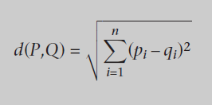
Recomendadores y agrupamiento
Distancia euclidiana
La operación extra para la similitud nos resuelve cualquier posible división por cero.
def euclidean_dist(dic1, dic2):
"""Compute the sum of squares of the elements common
to both dictionaries"""
return sqrt(sum([pow(dic1[elem]-dic2[elem], 2)
for elem in dic1 if elem in dic2]))
def euclidean_similarity(dic1, dic2):
"""Calculate the euclidean similarity."""
return 1/(1+euclidean_dist(dic1, dic2))
Recomendadores y agrupamiento
Coeficiente de Pearson
Resuelve los problemas de la distancia euclidiana con los valores extremos ya que computa correlaciones entre todo los elementos usando medias.
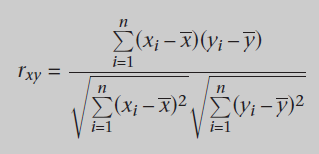
Recomendadores y agrupamiento
Coeficiente de Pearson
EL coeficinete de Pearson tiene un rango de [-1,1] el cual nos indica la correlación entre las variables.
- 1: Las variables son perfectamente correlativas
- 0: No existe correlación entre ellas
- -1: Las variables son negativamente correlativas o opuestas
Recomendadores y agrupamiento
Coeficiente de Pearson
def pearson_coeff(dic1, dic2):
"""Retrieve the elements common to both dictionaries"""
commons = [x for x in dic1 if x in dic2]
nCommons = float(len(commons))
# If there are no common elements, return zero; otherwise
# compute the coefficient
if nCommons==0:
return 0
# Compute the means of each dictionary
mean1 = sum([dic1[x] for x in commons])/nCommons
mean2 = sum([dic2[x] for x in commons])/nCommons
# Compute numerator and denominator
num = sum([(dic1[x]-mean1)*(dic2[x]-mean2) for x in commons])
den1 = sqrt(sum([pow(dic1[x]-mean1, 2) for x in commons]))
den2 = sqrt(sum([pow(dic2[x]-mean2, 2) for x in commons]))
den = den1*den2
# Compute the coefficient if possible or return zero
if den==0:
return 0
return num/den
Recomendadores y agrupamiento
Ponderado
Un recomendador ponderado se basa en similitudes considerados pesos.
def weightedRating(dictio, item, similarity = pearson_coeff):
simils = {x: similarity(dictio[user], dictio[x], term)
for x in dictio if x != user}
numerator = {}
denominator = {}
# The ratings dictionary is traversed, while filling the
# auxiliary dictionaries with the values found.
for id1 in simils:
for id2 in dictio[id1]:
if not numerator.has_key(id2):
numerator [id2] = []
denominator[id2] = []
s = simils[id1]
numerator [id1].append(dictio[id1][id2])
denominator[id1].append(s)
# Compute and sort weighted ratings
result = []
for id2 in numerator:
s1 = sum(numerator [id2])
s2 = sum(denominator[id2])
if s2 == 0:
mean = 0.0
else:
mean = s1/s2
result.append((id2,mean))
result.sort(key = lambda x: x[1], reverse=True)
return result
Recomendadores y agrupamiento
k-means
El algoritmo de k-means busca particiones de datos tales que cada punto este asignado a un centro llamado centroide del grupo.
- Selecionar k puntos al azar como centroides iniciales.
- Asignar cada dato al centroide más cercano
- Recalcular los centroides de los k grupos para que sean el centro geométrico del grupo
- Volver al paso dos hasta que los grupos no varían
Extracción y seleción de datos
La regla es simple: datos = señal + ruido
Tampoco todos los datos son necesarios y a veces no nos dejan ver la realidad.
Se conoce como reducción de la dimensionalidad
Extracción y seleción de datos
PCA
Princiapl Component Analysis
- Encuentra los ejes que forman la base de la nuve de puntos de datos. Sería como la fusión de los atributos.
- Consiste en la diagonalización de la matriz de la covarianza.
- En corto, nos indica que componenets influyen más.
- Representación visual en 2D o 3D.
Extracción y seleción de datos
PCA
Princiapl Component Analysis
- Calcular la matriz de covarianza
- Obtener los valores y vectores propios (base)
- Encontrar los valores y vectores relevantes
- Indica cuántos componentes son necesarios para obtener una vaianza X
- La suma de los valores propios nos da 1
Extracción y seleción de datos
PCA
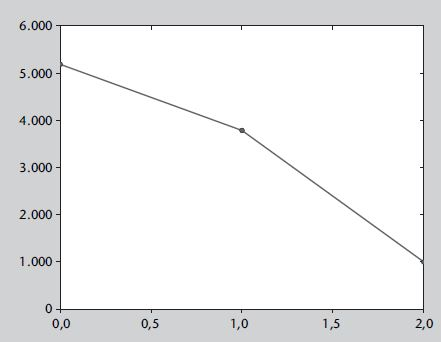 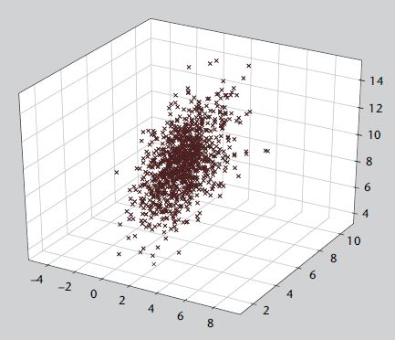
Extracción y seleción de datos
LDA
Lineal Discrimination Analysis
- Analiza la dependencia lineal entre variables
- Produce una predicción
- Se considera machine learning
- Se usa en set de datos conocido de entrenamiento para predecir el resultado de un set desconocido
- Basado en estimaciones estadísticas
Extracción y seleción de datos
LDA
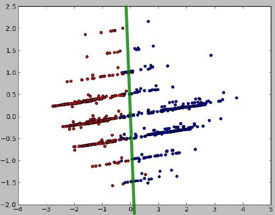 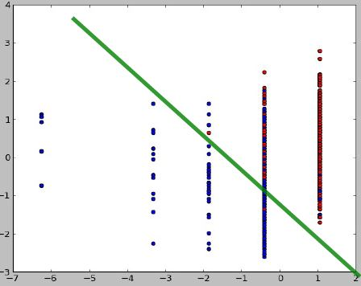
Extracción y seleción de datos
MDS
Multi Dimensional Scaling
Busca un espacio de dimensión reducida donde las distancias relativas entre los elementos se mantengan.
Extracción y seleción de datos
MDS
- Crear una matríz de distancias MxM donde M representan las observaciones
- Crea una distribución aleatoria al espacio deseado (2D por ejemplo) de M
- Paa cada par de la distribución aleatoria se calcula la distancia entre el espacio proyectado (2D por ejemplo) y el original
-
- Corregir la el error entre el espacio aleatorio y el original
- Si el erroro es mayorel random actual (sin corregir) es la solución.
- Sino corregir el error y volver al paso 3.1
Extracción y seleción de datos
MDS
Las muertes (azul) están estrechamente relacionadas con las variables analizadas pero los kills (rojo) no.
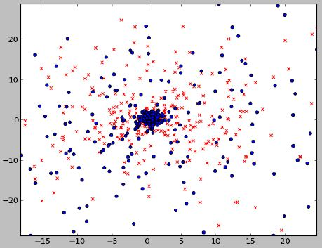
Clasificación
Principalmente consiste en reconocer patrones y poner etiquetas a cada individuo a partir de ciertas propiedades que lo identifiquen.
En juegos los clasificadores se suelen usar para identificar jugadores hard-core, casuales, etc...
Clasificación
kNN
k-Nearets-Neighbours
Consiste en clasificar un elemento contanto los k vecinos más cercanos.
Clasificación
kNN
- k=3: El círculo rojo se clasifica como un rombo
- k=5: El círuclo rojo se clasifica como un cuadrado
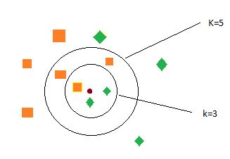
Clasificación
Test estadístico
Es la diferenia estadística de los datos classificao significativa?
- Student
- McNemar, muy usado ya que es muy ligero
Clasificación
McNemar
Dos implementaciones del test de McNemar. Personalmente prefiere la implementación que se encuentra en Wikipeda.
import collections
compare = lambda x, y: collections.Counter(x) == collections.Counter(y)
def McNemar(predF, predG, classes):
if compare(predF, predG):
return False
f = predF != classes
g = predG == classes
A = float(sum(map(lambda x, y: x and y, f, g)))
f = predG != classes
g = predF == classes
B = float(sum(map(lambda x, y: x and y, f, g)))
t = (abs(A - B) - 1) ** 2 / (A + B)
return t > 3.842
def McNemarWikipedia(predF, predG, classes):
if compare(predF, predG):
return False
b = float(len(list(filter(lambda x: (predG[x]=='0') and (predF[x]=='1'), range(len(predG))))))
c = float(len(list(filter(lambda x: (predG[x]=='1') and (predF[x]=='0'), range(len(predG))))))
t = (b - c) ** 2 / (b + c)
return t > 3.842
Do it yourself
- GA System
- La API
- Casos de uso
GA System
El sistema que proponenmos es bastante sencillo de implementar.
- Componentes
- Telemetría
- Processo de datos (Análisis)
- Montado sobre OpenShift
- Gratuíto para proyectos pequeños
- Muy asequible, unos 20$ al més, para proyectos grandes
- Todo en la cloud, sobre Amazon
GA System
- Implementado sobre Node.js
- Performance increíble por usar Async I/O
- No es multi-thread! Menus consumo de RAM y CPU
- JavaScript mola!
- Package index igual que Python por ejemplo
- Jayson, JSON-RPC 2.0 package
- Dos instancias de MongoDB
- NoSQL es perfecto para este caso
- Rápido y flexible
GA System

La API
- Basado en sessiones, permite tener estadísticas simultáneas.
- La id de una sessión es simplemente la ID Encryptada de MongoDB
- Cada evento se submitea a una sessión existente
- Las sessiones han de tener una validez temporal, 24h por ejemplo
La API
startSession: function(userid, platform, build, callback)
endSession: function(sessionid, callback)
addGamePlayEvent: function(sessionid, basedata, eventdata, callback)
addDebugEvent: function(sessionid, basedata, eventdata, callback)
addMonetaryEvent: function(sessionid, basedata, eventdata, callback)
Casos de uso
Progresión de niveles
Estamos trabajándo en un pequeño juego para plataformas móviles para el cual hemos implementatdo el sistema que os acabo de presentar.
Los diseñadores de niveles han de tener claro como crear cada parte y necesitan datos detallados de como se comporta el jugador.
Descubrimos que los primeros niveles son mucho más difíciles que los últimos.
Casos de uso
Progresión de niveles
En qué nivel muere un jugador y más importante en que parte del nivel ha estado.
Casos de uso
Progresión de niveles
Otro elemento importante es saber en cada nivel que ha pasado. Datos acomulados nos proporcionan mucha información al respecto: Balas usadas, recargas realizadas, pickups encontrados, vida perdida, etc...
Aúnque a primera vista parecia que el número de pickups era suficiente los jugadores seguían muriéndo en nivel muy tempranos. La solución fue aumentar el número de pickups.
Nos os puedo decir si ahora mismo hay suficientes ya que el juego que tenéis en el stand captura los eventos para ese fin! Así que si nos queréis hechar una mano jugad un poco!
Casos de uso
Tracking de movimiento
Otro ejemplo muy útil es conocer el movimiento de los jugadores. El sistema de análisis DNA usado en la serie Assassin's Creed se inspira en Google Maps para representar movimientos de los jugadores
Saber por dónde pasan los jugadores o incluso la IA nos indica muchas veces fallos en el diseño graves y muy difíciles de depurar en un estado tardío del desarollo.
Casos de uso
Tracking de movimiento
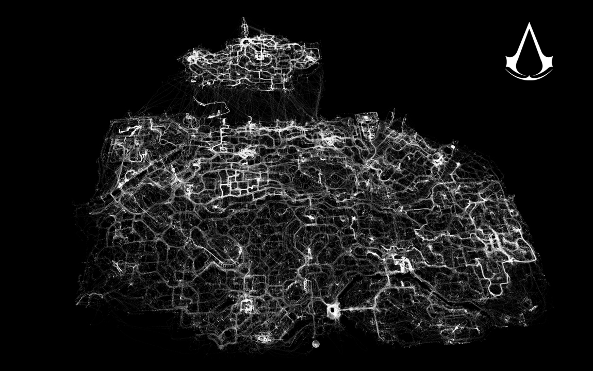
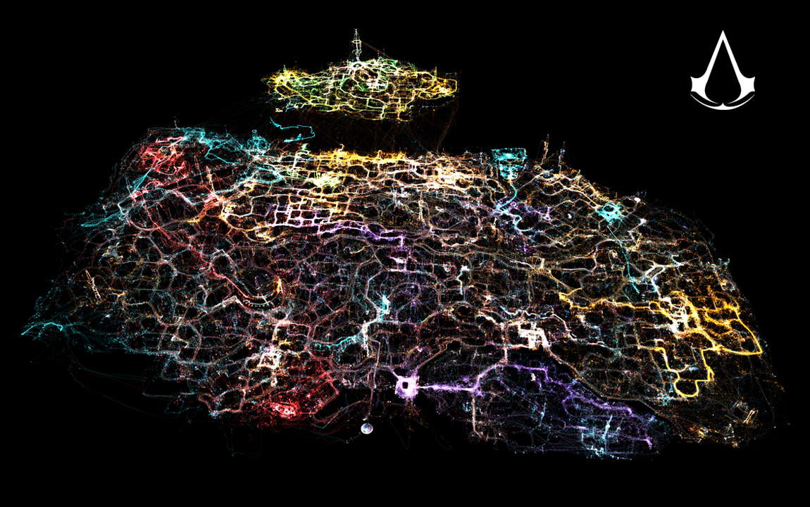
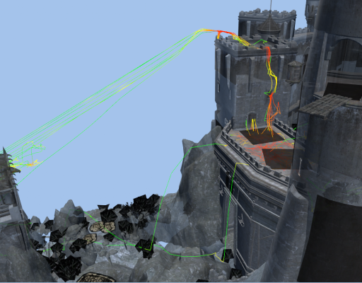
Casos de uso
Heatmaps
Los heatmaps son otra visaulización fundamental de cualquier análisis, no sólo para juegos. En el mundo web o UI tenemos heatmaps de clicks para saber si los usarios encuentran las secciones, los banners son efectivos etc.
En juegos se suelen general mapas de muertes o de kills pero es útil converger ambos en uno para poder visualizar bien lo que pasa en un mapa.
Pero podemos incluso general heatmaps de consumo de memoria en ciertas partes de juego, de rendimiento, etc...
Casos de uso
Heatmaps
El siguiente ejemplo nos muestra un mapa balanceado y un mapa de flujo del conjunto de muertes/deaths (el que muere y su asesino). El mapa balenceado es normalizado.


Casos de uso
Matchmaking
Incluso los más modernos sistemas de matchmaking intentar generar grupos para crear partidas más divertidas o equilibradas.
Casos de uso
Matchmaking
Un ejemplo es el sistema de matchmaking de Xbox Live llamado True Skill.
La idea es crear un ranking o score del jugador que va variando a medida que juega y despues crear grupos equilibrados de jugadores.
Estimación bayesiana desarollado por Microsoft Research Cambridge
Casos de uso
Matchmaking
Modela el skill del jugador como una función de densidad probabilistica [µ, σ]
- µ es la media (estimada actual)
- σ es la desviación estándar (eincertidumbre)